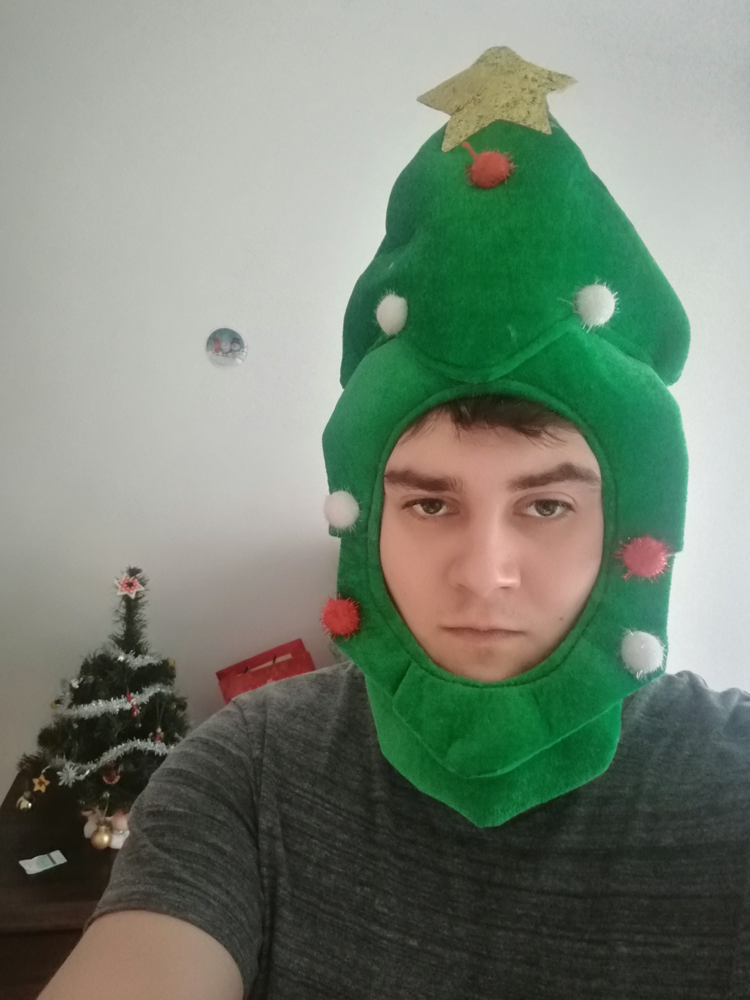
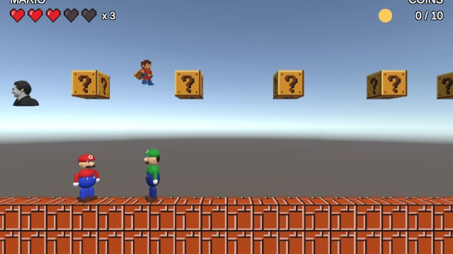
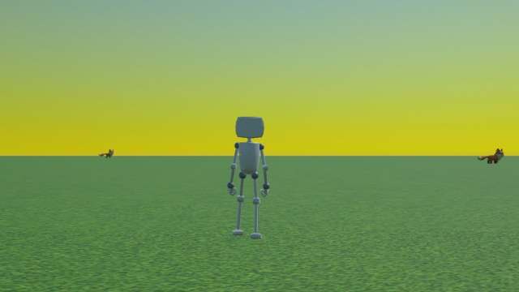
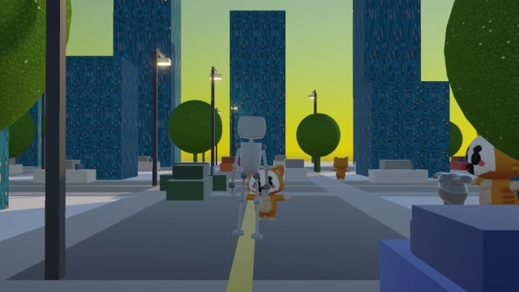

I build AI projects, games and data tools. Here you'll find what I've made so far.
Discount data pipeline and analysis tool.
AI / PythonInteractive vocabulary quiz in the browser.
Web appMy role-playing game project.
GameGenerative music-style visuals running in the browser.
Visual art
Reconstruction of Mario in a 3D world with funny assets, including me.
Unity Play
Foxes game.
Unity Play
Explore a sandbox world with a robot.
Unity Play